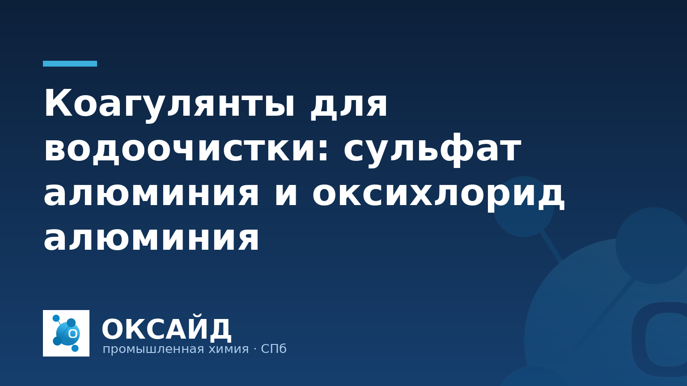

Эффективная водоочистка — непременное условие для промышленных предприятий. Качество воды влияет на стабильность процессов, срок службы оборудования и соответствие нормам. Одной из важнейших стадий водоподготовки является коагуляция — процесс, позволяющий удалить взвешенные вещества, коллоидные частицы и часть органических загрязнений. В качестве коагулянтов широко применяются соединения алюминия, среди которых наиболее востребованы сульфат алюминия и оксихлорид алюминия. Понимание различий между ними помогает выбрать оптимальное решение для конкретных задач водоочистки.
Коагулянты используются для дестабилизации мелкодисперсных частиц. Эти частицы, имея отрицательный заряд, отталкиваются друг от друга, не давая им осесть. Коагулянты нейтрализуют заряд частиц, способствуя их укрупнению и образованию хлопьев (флокул), которые затем легче удаляются методами отстаивания, фильтрации или флотации.
Коагулянты востребованы в самых разных отраслях:
Применение коагулянтов снижает мутность, цветность, содержание взвешенных веществ, органических соединений и некоторых тяжелых металлов.
Сульфат алюминия (АС), или сернокислый алюминий, является традиционным и экономичным коагулянтом. Он поставляется в виде гранул, кусков или растворов. При контакте с водой сульфат алюминия гидролизуется, образуя гидроксид алюминия Al(OH)3, который представляет собой нерастворимые хлопья. Эти хлопья обладают большой адсорбционной способностью и эффективно захватывают взвешенные частицы и коллоиды.
Основные особенности сульфата алюминия:
Сульфат алюминия применяется на большинстве водоочистных сооружений, где требуется эффективная и экономичная коагуляция, а параметры исходной воды стабильны и поддаются корректировке.
Оксихлорид алюминия (ОХА), или полиалюминия хлорид (ПАХ), относится к прегидролизованным полимерным коагулянтам. Его молекулярная структура уже включает полимерные формы гидроксида алюминия, что обеспечивает более быстрый и эффективный процесс коагуляции. ОХА поставляется преимущественно в виде концентрированных растворов.
Ключевые преимущества оксихлорида алюминия:
Несмотря на более высокую стоимость, оксихлорид алюминия часто экономически выгоднее в долгосрочной перспективе за счет меньшей дозировки, экономии на корректировке pH и сокращения затрат на утилизацию шлама.
Выбор оптимального коагулянта зависит от ряда факторов, специфичных для каждого предприятия:
ООО «Оксайд» предлагает широкий спектр коагулянтов для различных промышленных нужд. Ознакомиться с доступными продуктами можно в нашем каталоге продукции «Оксайд».
Правильное хранение и транспортировка коагулянтов обеспечивают их стабильность, эффективность и безопасность. При работе с любыми коагулянтами необходимо соблюдать стандартные меры предосторожности: использовать средства индивидуальной защиты (перчатки, защитные очки), обеспечить достаточную вентиляцию помещений.
При транспортировке коагулянтов следует строго соблюдать правила перевозки химических грузов. Продукты должны быть надежно упакованы и закреплены, чтобы исключить утечки или повреждения. Транспортные средства должны быть оборудованы для перевозки опасных грузов, а персонал — обучен правилам обращения с ними и действиям в случае нештатных ситуаций. На упаковке и транспортных средствах должна быть соответствующая маркировка.
Выбор между сульфатом алюминия и оксихлоридом алюминия — это всегда компромисс, зависящий от конкретных условий водоочистки, требований к качеству воды и экономической целесообразности. Сульфат алюминия остается проверенным и бюджетным решением для стабильных условий, тогда как оксихлорид алюминия предлагает более высокую эффективность, широкий диапазон применения и меньшие эксплуатационные расходы в сложных случаях. ООО «Оксайд» является экспертом в области водоподготовки и предлагает не только высококачественные коагулянты, но и профессиональную поддержку в их подборе и применении, помогая нашим клиентам достигать оптимальных результатов в водоочистке.